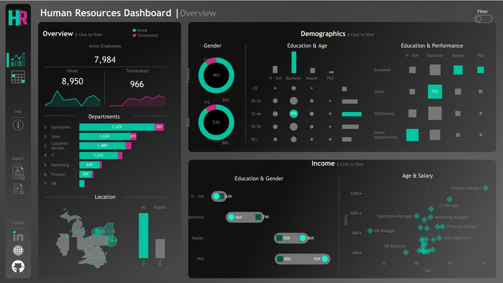
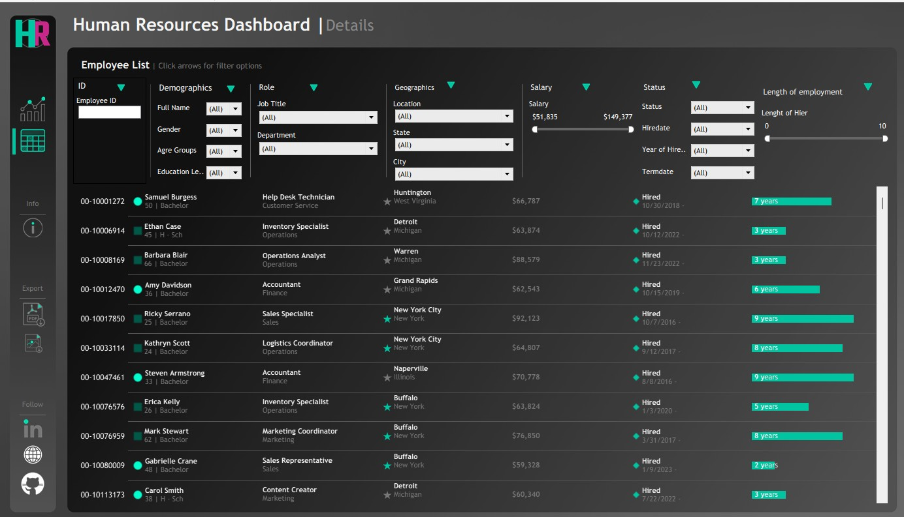
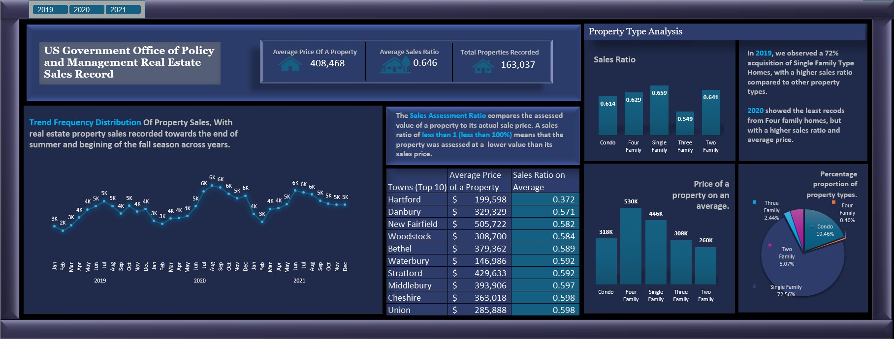
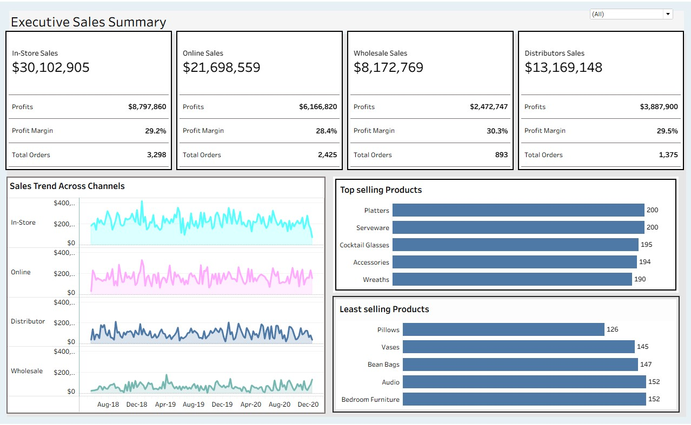
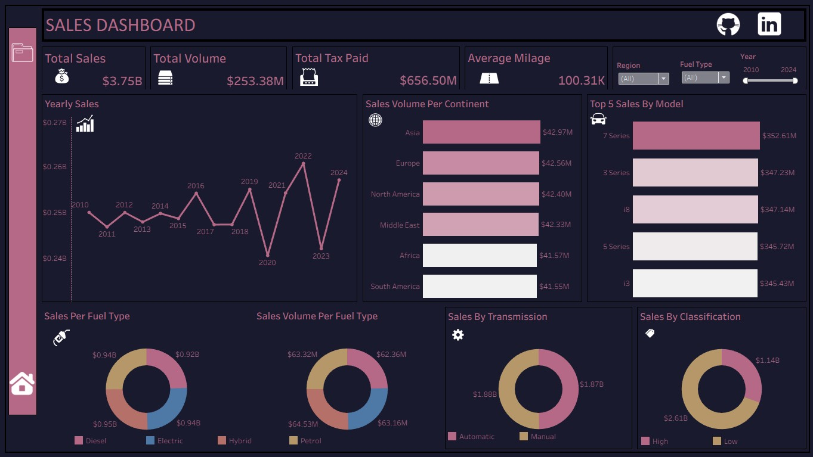

Production-ready tools built to automate workflows, eliminate manual reporting leaks, and flag performance gaps.
The Core Problem: Operations managers routinely drown in disconnected spreadsheets and lagging performance reviews, completely losing visibility when agent metrics drop below target benchmarks.
The Architecture: Built using Tableau and Power Query to automate backend data cleaning, transform raw CSV exports instantly, and eliminate manual weekly compilation hours.
Chaotic manual trackers, hours of reporting lag, and hidden drops in agent performance benchmarks.
Real-time data refresh with automated conditional formatting that immediately flags underperforming metrics for rapid team leadership intervention.


The Core Problem: Public sector and enterprise operations struggle with high-volume transactional data sets, introducing massive formula drag, memory lag, and visualization errors across multi-year cycles.
The Architecture: Advanced Microsoft Excel engine utilizing relational data layouts and optimized formula logic. Built to process heavy public data distribution schemas smoothly without sacrificing speed.
Bloated spreadsheets, manual trends sorting, and rigid layouts that mask critical volume indicators.
Highly scannable, interactive trends tracking that allows policymakers and executives to isolate key variables in seconds.

The Core Problem: C-suite executives and directors lose hours digging through multi-dimensional tracking metrics instead of immediately spotting high-level margins and growth leaks.
The Architecture: Developed via Tableau. Features an ultra-clean UI designed to strip out data noise and synthesize multiple regional channels into unified executive visualizations.

The Core Problem: Mid-level managers and analysts need deep visibility across overlapping commercial segments to isolate specific growth opportunities over time without writing custom SQL loops daily.
The Architecture: Designed in Tableau, utilizing optimized parameters to enable ad-hoc cross-filtering and multi-dimensional analysis on demand.
